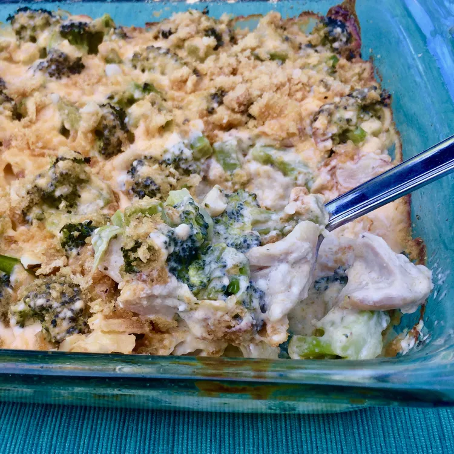

< Home
Chicken Broccoli Casserole

Description
This casserole is great for using up leftover chicken and cooked broccoli. Use any combination of cooked chicken — dark and white, all dark, or all white. I used chicken thighs. It's a keto recipe, to boot!
Ingredients
- 1 tablespoon extra virgin olive oil
- 2 1/2 cups cooked chicken, cut into bite-sized pieces
- 3 cups chopped, cooked broccoli
- 1/4 cup sliced almonds
- 4 tablespoons butter
- 1 cup heavy cream
- 1/2 (8 ounce) package cream cheese, cut into 1-inch cubes
- 4 ounces grated sharp Cheddar cheese
- salt and ground black pepper to taste
- 3/4 cup crushed pork rinds
Steps
- Preheat the oven to 350 degrees F (175 degrees C).
- Pour olive oil into a 9x13-inch baking dish and spread over the bottom and sides. Arrange cooked chicken in a single layer in the dish. Distribute cooked broccoli evenly over the chicken and sprinkle with almonds.
- Melt butter in a saucepan over medium heat. Add cream; cook and stir for 1 to 2 minutes. Stir in cream cheese until melted and smooth, 2 to 3 minutes. Add Cheddar cheese and stir until melted, 2 to 3 minutes. Season with salt and pepper. Pour sauce over chicken, broccoli, and almonds; top with crushed pork rinds.
- Bake in the preheated oven until sauce is bubbly, 25 to 30 minutes.
Source: allrecipes